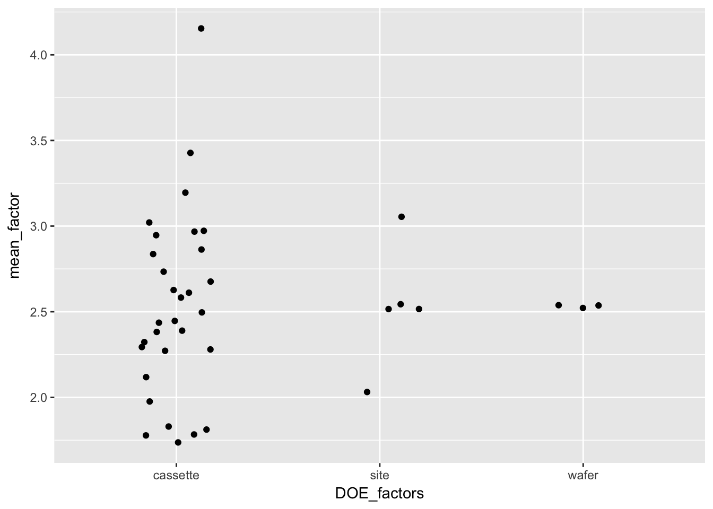
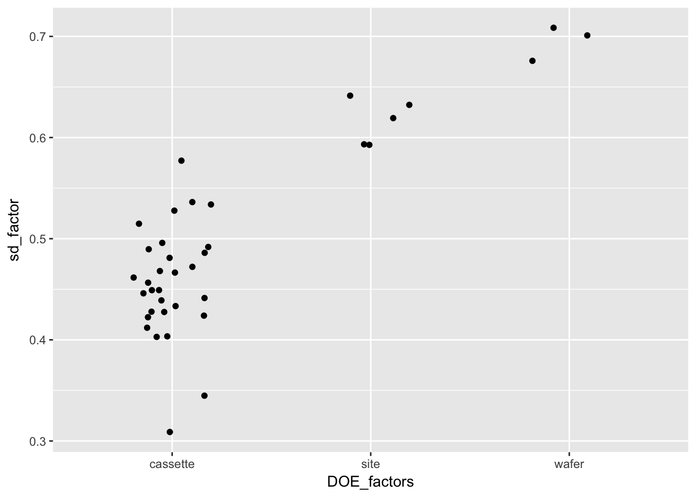

6 Process Monitoring
6.1 Packages used in this chapter
6.2 Case Stuidies
6.2.1 Lithography Process Example
6.2.1.1 Background
One of the assumptions in using classical Shewhart SPC charts is that the only source of variation is from part to part (or within subgroup variation). This is the case for most continuous processing situations. However, many of today’s processing situations have different sources of variation. The semiconductor industry is one of the areas where the processing creates multiple sources of variation.
In semiconductor processing, the basic experimental unit is a silicon wafer. Operations are performed on the wafer, but individual wafers can be grouped multiple ways. In the diffusion area, up to 150 wafers are processed in one time in a diffusion tube. In the etch area, single wafers are processed individually. In the lithography area, the light exposure is done on sub-areas of the wafer. There are many times during the production of a computer chip where the experimental unit varies and thus there are different sources of variation in this batch processing environment.
The following is a case study of a lithography process. Five sites are measured on each wafer, three wafers are measured in a cassette (typically a grouping of 24 - 25 wafers) and thirty cassettes of wafers are used in the study. The width of a line is the measurement under study. There are two line width variables. The first is the original data and the second has been cleaned up somewhat. This case study uses the raw data. The entire data table is 450 rows long with six columns.
6.2.1.2 Data
litho <- read_table2("NIST data/monitor-6.6.1.1.dat",
skip = 4, col_names = FALSE) %>%
rename(cassette = X1, wafer = X2, site = X3, raw_linewidth = X4, run_number = X5, cleaned_linewidth = X6)## Parsed with column specification:
## cols(
## X1 = col_integer(),
## X2 = col_integer(),
## X3 = col_character(),
## X4 = col_double(),
## X5 = col_integer(),
## X6 = col_double()
## )## # A tibble: 450 x 6
## cassette wafer site raw_linewidth run_number cleaned_linewidth
## <int> <int> <chr> <dbl> <int> <dbl>
## 1 1 1 Top 3.20 1 3.20
## 2 1 1 Lef 2.25 2 2.25
## 3 1 1 Cen 2.07 3 2.07
## 4 1 1 Rgt 2.42 4 2.41
## 5 1 1 Bot 2.39 5 2.38
## 6 1 2 Top 2.65 6 2.64
## 7 1 2 Lef 2.00 7 1.99
## 8 1 2 Cen 1.86 8 1.85
## 9 1 2 Rgt 2.14 9 2.12
## 10 1 2 Bot 1.98 10 1.96
## # ... with 440 more rows6.2.1.3 Generate some simple plots
## Warning: Removed 1 rows containing missing values (geom_point).## `stat_bin()` using `bins = 30`. Pick better value with `binwidth`.6.2.1.4 Summarise the raw linewidth and cleaned linesidth data
## raw_linewidth cleaned_linewidth
## Min. :0.7465 Min. :0.3205
## 1st Qu.:2.0505 1st Qu.:1.6476
## Median :2.4533 Median :2.0367
## Mean :2.5323 Mean :2.0813
## 3rd Qu.:2.9697 3rd Qu.:2.4856
## Max. :5.1687 Max. :4.36676.2.1.5 Plot the response against individual factors
ggplot(litho) +
geom_point(aes(cassette, raw_linewidth), alpha = 1/3) +
geom_boxplot(aes(cassette, raw_linewidth, group = cassette), alpha = 0, outlier.alpha = 1, outlier.colour = "red")6.2.1.6 DOE plots
We need to gather the factors in to a single column
litho_DOE <- litho %>%
gather(`cassette`, `wafer`, `site`, key = DOE_factors, value = "value")
litho_DOE## # A tibble: 1,350 x 5
## raw_linewidth run_number cleaned_linewidth DOE_factors value
## <dbl> <int> <dbl> <chr> <chr>
## 1 3.20 1 3.20 cassette 1
## 2 2.25 2 2.25 cassette 1
## 3 2.07 3 2.07 cassette 1
## 4 2.42 4 2.41 cassette 1
## 5 2.39 5 2.38 cassette 1
## 6 2.65 6 2.64 cassette 1
## 7 2.00 7 1.99 cassette 1
## 8 1.86 8 1.85 cassette 1
## 9 2.14 9 2.12 cassette 1
## 10 1.98 10 1.96 cassette 1
## # ... with 1,340 more rows## # A tibble: 1,350 x 5
## # Groups: DOE_factors, value [38]
## raw_linewidth run_number cleaned_linewidth DOE_factors value
## <dbl> <int> <dbl> <chr> <chr>
## 1 3.20 1 3.20 cassette 1
## 2 2.25 2 2.25 cassette 1
## 3 2.07 3 2.07 cassette 1
## 4 2.42 4 2.41 cassette 1
## 5 2.39 5 2.38 cassette 1
## 6 2.65 6 2.64 cassette 1
## 7 2.00 7 1.99 cassette 1
## 8 1.86 8 1.85 cassette 1
## 9 2.14 9 2.12 cassette 1
## 10 1.98 10 1.96 cassette 1
## # ... with 1,340 more rowslitho_summary <- litho_group %>%
summarise(mean_factor = mean(raw_linewidth), count = n())
litho_summary## # A tibble: 38 x 4
## # Groups: DOE_factors [?]
## DOE_factors value mean_factor count
## <chr> <chr> <dbl> <int>
## 1 cassette 1 2.27 15
## 2 cassette 10 2.29 15
## 3 cassette 11 2.68 15
## 4 cassette 12 1.81 15
## 5 cassette 13 2.73 15
## 6 cassette 14 2.97 15
## 7 cassette 15 1.83 15
## 8 cassette 16 2.45 15
## 9 cassette 17 2.28 15
## 10 cassette 18 2.39 15
## # ... with 28 more rows
litho_summary_sd <- litho_group %>%
summarise(sd_factor = sd(raw_linewidth), count = n())
litho_summary_sd## # A tibble: 38 x 4
## # Groups: DOE_factors [?]
## DOE_factors value sd_factor count
## <chr> <chr> <dbl> <int>
## 1 cassette 1 0.403 15
## 2 cassette 10 0.428 15
## 3 cassette 11 0.486 15
## 4 cassette 12 0.449 15
## 5 cassette 13 0.345 15
## 6 cassette 14 0.403 15
## 7 cassette 15 0.433 15
## 8 cassette 16 0.466 15
## 9 cassette 17 0.492 15
## 10 cassette 18 0.496 15
## # ... with 28 more rows
6.2.1.7 Subgroup analysis
6.2.1.7.1 Run chart
The chart below adds the mean and control limits based on the standard deviation of the data.
sd_lw <- litho %$%
sd(raw_linewidth)
mean_lw <- litho %$%
mean(raw_linewidth)
ggplot(litho) +
geom_line(aes(run_number, raw_linewidth)) +
geom_hline(yintercept = mean_lw + 2*sd_lw, linetype = "dashed") +
geom_hline(yintercept = mean_lw - 2*sd_lw, linetype = "dashed") +
geom_hline(yintercept = mean_lw)6.2.1.7.2 Summarise by wafer
litho_wafer <- litho %>%
group_by(cassette, wafer) %>%
summarise(wafer_mean = mean(raw_linewidth), wafer_sd = sd(raw_linewidth)) %>%
rowid_to_column(var = "wafer_number") %>%
ungroup()
litho_wafer## # A tibble: 90 x 5
## wafer_number cassette wafer wafer_mean wafer_sd
## <int> <int> <int> <dbl> <dbl>
## 1 1 1 1 2.47 0.431
## 2 2 1 2 2.13 0.311
## 3 3 1 3 2.22 0.456
## 4 4 2 1 2.43 0.443
## 5 5 2 2 1.87 0.296
## 6 6 2 3 2.05 0.322
## 7 7 3 1 1.68 0.331
## 8 8 3 2 1.83 0.311
## 9 9 3 3 1.70 0.333
## 10 10 4 1 2.18 0.441
## # ... with 80 more rows6.2.1.7.3 Wafer stats
sd_wafer <- litho_wafer %$%
sd(wafer_mean)
rms_sd_wafer <- litho_wafer %>%
dplyr::select(wafer_sd) %>%
mutate(sd_squared = wafer_sd^2) %$%
sqrt(mean(sd_squared))
mean_wafer_sd <- litho_wafer %$%
mean(wafer_sd)
mean_wafer_sd## [1] 0.407502## [1] 0.5862159## [1] 0.41892276.2.1.7.4 Wafer mean control chart
6.2.1.7.5 SD control chart by wafer
Using the methods from (2.2.3.1. Control chart for standard)[https://www.itl.nist.gov/div898/handbook/mpc/section2/mpc231.htm] we can construct an UCL for the standard deviations
## `stat_bin()` using `bins = 30`. Pick better value with `binwidth`.6.2.1.7.6 Summarise by cassette
litho_cassette <- litho %>%
group_by(cassette) %>%
summarise(cassette_mean = mean(raw_linewidth), cassette_sd = sd(raw_linewidth)) %>%
ungroup()
litho_cassette## # A tibble: 30 x 3
## cassette cassette_mean cassette_sd
## <int> <dbl> <dbl>
## 1 1 2.27 0.403
## 2 2 2.12 0.412
## 3 3 1.74 0.309
## 4 4 2.44 0.515
## 5 5 3.02 0.528
## 6 6 2.58 0.446
## 7 7 2.32 0.472
## 8 8 1.78 0.449
## 9 9 1.78 0.422
## 10 10 2.29 0.428
## # ... with 20 more rows6.2.1.7.7 Mean control chart by cassette
6.2.1.7.8 SD control chart by cassette
6.2.1.7.9 Variance compoent estimation
Attach the nessary libraries
## Warning: package 'lme4' was built under R version 3.4.4## Loading required package: Matrix## Warning: package 'Matrix' was built under R version 3.4.4##
## Attaching package: 'Matrix'## The following object is masked from 'package:tidyr':
##
## expandFit the random effects model and print the variance compoents
random_effects_model <- lmer(raw_linewidth ~ 1|cassette/wafer, data = litho)
summary(random_effects_model)## Linear mixed model fit by REML ['lmerMod']
## Formula: raw_linewidth ~ 1 | cassette/wafer
## Data: litho
##
## REML criterion at convergence: 645.5
##
## Scaled residuals:
## Min 1Q Median 3Q Max
## -2.45850 -0.62363 -0.03559 0.57612 2.52347
##
## Random effects:
## Groups Name Variance Std.Dev.
## wafer:cassette (Intercept) 0.04997 0.2235
## cassette (Intercept) 0.26452 0.5143
## Residual 0.17550 0.4189
## Number of obs: 450, groups: wafer:cassette, 90; cassette, 30
##
## Fixed effects:
## Estimate Std. Error t value
## (Intercept) 2.53228 0.09881 25.63## raw_linewidth cassette wafer .fitted .resid .fixed .mu
## 1 3.199275 1 1 2.397405 0.801869573 2.532284 2.397405
## 2 2.253081 1 1 2.397405 -0.144324427 2.532284 2.397405
## 3 2.074308 1 1 2.397405 -0.323097427 2.532284 2.397405
## 4 2.418206 1 1 2.397405 0.020800573 2.532284 2.397405
## 5 2.393732 1 1 2.397405 -0.003673427 2.532284 2.397405
## 6 2.654947 1 2 2.196917 0.458029715 2.532284 2.196917
## 7 2.003234 1 2 2.196917 -0.193683285 2.532284 2.196917
## 8 1.861268 1 2 2.196917 -0.335649285 2.532284 2.196917
## 9 2.136102 1 2 2.196917 -0.060815285 2.532284 2.196917
## 10 1.976495 1 2 2.196917 -0.220422285 2.532284 2.196917
## 11 2.887053 1 3 2.253183 0.633869650 2.532284 2.253183
## 12 2.061239 1 3 2.253183 -0.191944350 2.532284 2.253183
## 13 1.625191 1 3 2.253183 -0.627992350 2.532284 2.253183
## 14 2.304313 1 3 2.253183 0.051129650 2.532284 2.253183
## 15 2.233187 1 3 2.253183 -0.019996350 2.532284 2.253183
## 16 3.160233 2 1 2.318913 0.841320221 2.532284 2.318913
## 17 2.518913 2 1 2.318913 0.200000221 2.532284 2.318913
## 18 2.072211 2 1 2.318913 -0.246701779 2.532284 2.318913
## 19 2.287210 2 1 2.318913 -0.031702779 2.532284 2.318913
## 20 2.120452 2 1 2.318913 -0.198460779 2.532284 2.318913
## 21 2.063058 2 2 1.987554 0.075503944 2.532284 1.987554
## 22 2.217220 2 2 1.987554 0.229665944 2.532284 1.987554
## 23 1.472945 2 2 1.987554 -0.514609056 2.532284 1.987554
## 24 1.684581 2 2 1.987554 -0.302973056 2.532284 1.987554
## 25 1.900688 2 2 1.987554 -0.086866056 2.532284 1.987554
## 26 2.346254 2 3 2.097438 0.248816193 2.532284 2.097438
## 27 2.172825 2 3 2.097438 0.075387193 2.532284 2.097438
## 28 1.536538 2 3 2.097438 -0.560899807 2.532284 2.097438
## 29 1.966630 2 3 2.097438 -0.130807807 2.532284 2.097438
## 30 2.251576 2 3 2.097438 0.154138193 2.532284 2.097438
## 31 2.198141 3 1 1.733829 0.464312376 2.532284 1.733829
## 32 1.728784 3 1 1.733829 -0.005044624 2.532284 1.733829
## 33 1.357348 3 1 1.733829 -0.376480624 2.532284 1.733829
## 34 1.673159 3 1 1.733829 -0.060669624 2.532284 1.733829
## 35 1.429586 3 1 1.733829 -0.304242624 2.532284 1.733829
## 36 2.231291 3 2 1.824294 0.406997082 2.532284 1.824294
## 37 1.561993 3 2 1.824294 -0.262300918 2.532284 1.824294
## 38 1.520104 3 2 1.824294 -0.304189918 2.532284 1.824294
## 39 2.066068 3 2 1.824294 0.241774082 2.532284 1.824294
## 40 1.777603 3 2 1.824294 -0.046690918 2.532284 1.824294
## 41 2.244736 3 3 1.748700 0.496036378 2.532284 1.748700
## 42 1.745877 3 3 1.748700 -0.002822622 2.532284 1.748700
## 43 1.366895 3 3 1.748700 -0.381804622 2.532284 1.748700
## 44 1.615229 3 3 1.748700 -0.133470622 2.532284 1.748700
## 45 1.540863 3 3 1.748700 -0.207836622 2.532284 1.748700
## 46 2.929037 4 1 2.288878 0.640159073 2.532284 2.288878
## 47 2.035900 4 1 2.288878 -0.252977927 2.532284 2.288878
## 48 1.786147 4 1 2.288878 -0.502730927 2.532284 2.288878
## 49 1.980323 4 1 2.288878 -0.308554927 2.532284 2.288878
## 50 2.162919 4 1 2.288878 -0.125958927 2.532284 2.288878
## 51 2.855798 4 2 2.316285 0.539512663 2.532284 2.316285
## 52 2.104193 4 2 2.316285 -0.212092337 2.532284 2.316285
## 53 1.919507 4 2 2.316285 -0.396778337 2.532284 2.316285
## 54 2.019415 4 2 2.316285 -0.296870337 2.532284 2.316285
## 55 2.228705 4 2 2.316285 -0.087580337 2.532284 2.316285
## 56 3.219292 4 3 2.714948 0.504343818 2.532284 2.714948
## 57 2.900430 4 3 2.714948 0.185481818 2.532284 2.714948
## 58 2.171262 4 3 2.714948 -0.543686182 2.532284 2.714948
## 59 3.041250 4 3 2.714948 0.326301818 2.532284 2.714948
## 60 3.188804 4 3 2.714948 0.473855818 2.532284 2.714948
## 61 3.051234 5 1 2.702226 0.349007940 2.532284 2.702226
## 62 2.506230 5 1 2.702226 -0.195996060 2.532284 2.702226
## 63 1.950486 5 1 2.702226 -0.751740060 2.532284 2.702226
## 64 2.467719 5 1 2.702226 -0.234507060 2.532284 2.702226
## 65 2.581881 5 1 2.702226 -0.120345060 2.532284 2.702226
## 66 3.857221 5 2 3.140901 0.716319781 2.532284 3.140901
## 67 3.347343 5 2 3.140901 0.206441781 2.532284 3.140901
## 68 2.533870 5 2 3.140901 -0.607031219 2.532284 3.140901
## 69 3.190375 5 2 3.140901 0.049473781 2.532284 3.140901
## 70 3.362746 5 2 3.140901 0.221844781 2.532284 3.140901
## 71 3.690306 5 3 3.161507 0.528799176 2.532284 3.161507
## 72 3.401584 5 3 3.161507 0.240077176 2.532284 3.161507
## 73 2.963117 5 3 3.161507 -0.198389824 2.532284 3.161507
## 74 2.945828 5 3 3.161507 -0.215678824 2.532284 3.161507
## 75 3.466115 5 3 3.161507 0.304608176 2.532284 3.161507
## 76 2.938241 6 1 2.538503 0.399738314 2.532284 2.538503
## 77 2.526568 6 1 2.538503 -0.011934686 2.532284 2.538503
## 78 1.941370 6 1 2.538503 -0.597132686 2.532284 2.538503
## 79 2.765849 6 1 2.538503 0.227346314 2.532284 2.538503
## 80 2.382781 6 1 2.538503 -0.155721686 2.532284 2.538503
## 81 3.219665 6 2 2.572006 0.647658691 2.532284 2.572006
## 82 2.296011 6 2 2.572006 -0.275995309 2.532284 2.572006
## 83 2.256196 6 2 2.572006 -0.315810309 2.532284 2.572006
## 84 2.645933 6 2 2.572006 0.073926691 2.532284 2.572006
## 85 2.422187 6 2 2.572006 -0.149819309 2.532284 2.572006
## 86 3.180348 6 3 2.631210 0.549138363 2.532284 2.631210
## 87 2.849264 6 3 2.631210 0.218054363 2.532284 2.631210
## 88 1.601288 6 3 2.631210 -1.029921637 2.532284 2.631210
## 89 2.810051 6 3 2.631210 0.178841363 2.532284 2.631210
## 90 2.902980 6 3 2.631210 0.271770363 2.532284 2.631210
## 91 2.169679 7 1 2.123160 0.046518853 2.532284 2.123160
## 92 2.026506 7 1 2.123160 -0.096654147 2.532284 2.123160
## 93 1.671804 7 1 2.123160 -0.451356147 2.532284 2.123160
## 94 1.660760 7 1 2.123160 -0.462400147 2.532284 2.123160
## 95 2.314734 7 1 2.123160 0.191573853 2.532284 2.123160
## 96 2.912838 7 2 2.338686 0.574152360 2.532284 2.338686
## 97 2.323665 7 2 2.338686 -0.015020640 2.532284 2.338686
## 98 1.854223 7 2 2.338686 -0.484462640 2.532284 2.338686
## 99 2.391240 7 2 2.338686 0.052554360 2.532284 2.338686
## 100 2.196071 7 2 2.338686 -0.142614640 2.532284 2.338686
## 101 3.318517 7 3 2.531614 0.786902777 2.532284 2.531614
## 102 2.702735 7 3 2.531614 0.171120777 2.532284 2.531614
## 103 1.959008 7 3 2.531614 -0.572606223 2.532284 2.531614
## 104 2.512517 7 3 2.531614 -0.019097223 2.532284 2.531614
## 105 2.827469 7 3 2.531614 0.295854777 2.532284 2.531614
## 106 1.958022 8 1 1.689584 0.268438271 2.532284 1.689584
## 107 1.360106 8 1 1.689584 -0.329477729 2.532284 1.689584
## 108 0.971193 8 1 1.689584 -0.718390729 2.532284 1.689584
## 109 1.947857 8 1 1.689584 0.258273271 2.532284 1.689584
## 110 1.643580 8 1 1.689584 -0.046003729 2.532284 1.689584
## 111 2.357633 8 2 1.800398 0.557234600 2.532284 1.800398
## 112 1.757725 8 2 1.800398 -0.042673400 2.532284 1.800398
## 113 1.165886 8 2 1.800398 -0.634512400 2.532284 1.800398
## 114 2.231143 8 2 1.800398 0.430744600 2.532284 1.800398
## 115 1.311626 8 2 1.800398 -0.488772400 2.532284 1.800398
## 116 2.421686 8 3 1.934560 0.487126019 2.532284 1.934560
## 117 1.993855 8 3 1.934560 0.059295019 2.532284 1.934560
## 118 1.402543 8 3 1.934560 -0.532016981 2.532284 1.934560
## 119 2.008543 8 3 1.934560 0.073983019 2.532284 1.934560
## 120 2.139370 8 3 1.934560 0.204810019 2.532284 1.934560
## 121 2.190676 9 1 1.959423 0.231253427 2.532284 1.959423
## 122 2.287483 9 1 1.959423 0.328060427 2.532284 1.959423
## 123 1.698943 9 1 1.959423 -0.260479573 2.532284 1.959423
## 124 1.925731 9 1 1.959423 -0.033691573 2.532284 1.959423
## 125 2.057440 9 1 1.959423 0.098017427 2.532284 1.959423
## 126 2.353597 9 2 1.812932 0.540665183 2.532284 1.812932
## 127 1.796236 9 2 1.812932 -0.016695817 2.532284 1.812932
## 128 1.241040 9 2 1.812932 -0.571891817 2.532284 1.812932
## 129 1.677429 9 2 1.812932 -0.135502817 2.532284 1.812932
## 130 1.845041 9 2 1.812932 0.032109183 2.532284 1.812932
## 131 2.012669 9 3 1.667946 0.344723358 2.532284 1.667946
## 132 1.523769 9 3 1.667946 -0.144176642 2.532284 1.667946
## 133 0.790789 9 3 1.667946 -0.877156642 2.532284 1.667946
## 134 2.001942 9 3 1.667946 0.333996358 2.532284 1.667946
## 135 1.350051 9 3 1.667946 -0.317894642 2.532284 1.667946
## 136 2.825749 10 1 2.357094 0.468654771 2.532284 2.357094
## 137 2.502445 10 1 2.357094 0.145350771 2.532284 2.357094
## 138 1.938239 10 1 2.357094 -0.418855229 2.532284 2.357094
## 139 2.349497 10 1 2.357094 -0.007597229 2.532284 2.357094
## 140 2.310817 10 1 2.357094 -0.046277229 2.532284 2.357094
## 141 3.074576 10 2 2.218263 0.856312640 2.532284 2.218263
## 142 2.057821 10 2 2.218263 -0.160442360 2.532284 2.218263
## 143 1.793617 10 2 2.218263 -0.424646360 2.532284 2.218263
## 144 1.862251 10 2 2.218263 -0.356012360 2.532284 2.218263
## 145 1.956753 10 2 2.218263 -0.261510360 2.532284 2.218263
## 146 3.072840 10 3 2.334552 0.738288287 2.532284 2.334552
## 147 2.291035 10 3 2.334552 -0.043516713 2.532284 2.334552
## 148 1.873878 10 3 2.334552 -0.460673713 2.532284 2.334552
## 149 2.475640 10 3 2.334552 0.141088287 2.532284 2.334552
## 150 2.021472 10 3 2.334552 -0.313079713 2.532284 2.334552
## 151 3.228835 11 1 2.634201 0.594634324 2.532284 2.634201
## 152 2.719495 11 1 2.634201 0.085294324 2.532284 2.634201
## 153 2.207198 11 1 2.634201 -0.427002676 2.532284 2.634201
## 154 2.391608 11 1 2.634201 -0.242592676 2.532284 2.634201
## 155 2.525587 11 1 2.634201 -0.108613676 2.532284 2.634201
## 156 2.891103 11 2 2.533058 0.358044656 2.532284 2.533058
## 157 2.738007 11 2 2.533058 0.204948656 2.532284 2.533058
## 158 1.668337 11 2 2.533058 -0.864721344 2.532284 2.533058
## 159 2.496426 11 2 2.533058 -0.036632344 2.532284 2.533058
## 160 2.417926 11 2 2.533058 -0.115132344 2.532284 2.533058
## 161 3.541799 11 3 2.843834 0.697964510 2.532284 2.843834
## 162 3.058768 11 3 2.843834 0.214933510 2.532284 2.843834
## 163 2.187061 11 3 2.843834 -0.656773490 2.532284 2.843834
## 164 2.790261 11 3 2.843834 -0.053573490 2.532284 2.843834
## 165 3.279238 11 3 2.843834 0.435403510 2.532284 2.843834
## 166 2.347662 12 1 1.748642 0.599020267 2.532284 1.748642
## 167 1.383336 12 1 1.748642 -0.365305733 2.532284 1.748642
## 168 1.187168 12 1 1.748642 -0.561473733 2.532284 1.748642
## 169 1.693292 12 1 1.748642 -0.055349733 2.532284 1.748642
## 170 1.664072 12 1 1.748642 -0.084569733 2.532284 1.748642
## 171 2.385320 12 2 1.842730 0.542589503 2.532284 1.842730
## 172 1.607784 12 2 1.842730 -0.234946497 2.532284 1.842730
## 173 1.230307 12 2 1.842730 -0.612423497 2.532284 1.842730
## 174 1.945423 12 2 1.842730 0.102692503 2.532284 1.842730
## 175 1.907580 12 2 1.842730 0.064849503 2.532284 1.842730
## 176 2.691576 12 3 1.931171 0.760405467 2.532284 1.931171
## 177 1.938755 12 3 1.931171 0.007584467 2.532284 1.931171
## 178 1.275409 12 3 1.931171 -0.655761533 2.532284 1.931171
## 179 1.777315 12 3 1.931171 -0.153855533 2.532284 1.931171
## 180 2.146161 12 3 1.931171 0.214990467 2.532284 1.931171
## 181 3.218655 13 1 2.746640 0.472015127 2.532284 2.746640
## 182 2.912180 13 1 2.746640 0.165540127 2.532284 2.746640
## 183 2.336436 13 1 2.746640 -0.410203873 2.532284 2.746640
## 184 2.956036 13 1 2.746640 0.209396127 2.532284 2.746640
## 185 2.423235 13 1 2.746640 -0.323404873 2.532284 2.746640
## 186 3.302224 13 2 2.777867 0.524357171 2.532284 2.777867
## 187 2.808816 13 2 2.777867 0.030949171 2.532284 2.777867
## 188 2.340386 13 2 2.777867 -0.437480829 2.532284 2.777867
## 189 2.795120 13 2 2.777867 0.017253171 2.532284 2.777867
## 190 2.865800 13 2 2.777867 0.087933171 2.532284 2.777867
## 191 2.992217 13 3 2.652991 0.339226160 2.532284 2.652991
## 192 2.952106 13 3 2.652991 0.299115160 2.532284 2.652991
## 193 2.149299 13 3 2.652991 -0.503691840 2.532284 2.652991
## 194 2.448046 13 3 2.652991 -0.204944840 2.532284 2.652991
## 195 2.507733 13 3 2.652991 -0.145257840 2.532284 2.652991
## 196 3.530112 14 1 2.930121 0.599990877 2.532284 2.930121
## 197 2.940489 14 1 2.930121 0.010367877 2.532284 2.930121
## 198 2.598357 14 1 2.930121 -0.331764123 2.532284 2.930121
## 199 2.905165 14 1 2.930121 -0.024956123 2.532284 2.930121
## 200 2.692078 14 1 2.930121 -0.238043123 2.532284 2.930121
## 201 3.764270 14 2 3.045290 0.718980355 2.532284 3.045290
## 202 3.465960 14 2 3.045290 0.420670355 2.532284 3.045290
## 203 2.458628 14 2 3.045290 -0.586661645 2.532284 3.045290
## 204 3.141132 14 2 3.045290 0.095842355 2.532284 3.045290
## 205 2.816526 14 2 3.045290 -0.228763645 2.532284 3.045290
## 206 3.217614 14 3 2.875946 0.341667894 2.532284 2.875946
## 207 2.758171 14 3 2.875946 -0.117775106 2.532284 2.875946
## 208 2.345921 14 3 2.875946 -0.530025106 2.532284 2.875946
## 209 2.773653 14 3 2.875946 -0.102293106 2.532284 2.875946
## 210 3.109704 14 3 2.875946 0.233757894 2.532284 2.875946
## 211 2.177593 15 1 1.628454 0.549138745 2.532284 1.628454
## 212 1.511781 15 1 1.628454 -0.116673255 2.532284 1.628454
## 213 0.746546 15 1 1.628454 -0.881908255 2.532284 1.628454
## 214 1.491730 15 1 1.628454 -0.136724255 2.532284 1.628454
## 215 1.268580 15 1 1.628454 -0.359874255 2.532284 1.628454
## 216 2.433994 15 2 1.965194 0.468799916 2.532284 1.965194
## 217 2.045667 15 2 1.965194 0.080472916 2.532284 1.965194
## 218 1.612699 15 2 1.965194 -0.352495084 2.532284 1.965194
## 219 2.082860 15 2 1.965194 0.117665916 2.532284 1.965194
## 220 1.887341 15 2 1.965194 -0.077853084 2.532284 1.965194
## 221 1.923003 15 3 1.979982 -0.056978905 2.532284 1.979982
## 222 2.124461 15 3 1.979982 0.144479095 2.532284 1.979982
## 223 1.945048 15 3 1.979982 -0.034933905 2.532284 1.979982
## 224 2.210698 15 3 1.979982 0.230716095 2.532284 1.979982
## 225 1.985225 15 3 1.979982 0.005243095 2.532284 1.979982
## 226 3.131536 16 1 2.585214 0.546321560 2.532284 2.585214
## 227 2.405975 16 1 2.585214 -0.179239440 2.532284 2.585214
## 228 2.206320 16 1 2.585214 -0.378894440 2.532284 2.585214
## 229 3.012211 16 1 2.585214 0.426996560 2.532284 2.585214
## 230 2.628723 16 1 2.585214 0.043508560 2.532284 2.585214
## 231 2.802486 16 2 2.330170 0.472315945 2.532284 2.330170
## 232 2.185010 16 2 2.330170 -0.145160055 2.532284 2.330170
## 233 2.161802 16 2 2.330170 -0.168368055 2.532284 2.330170
## 234 2.102560 16 2 2.330170 -0.227610055 2.532284 2.330170
## 235 1.961968 16 2 2.330170 -0.368202055 2.532284 2.330170
## 236 3.330183 16 3 2.433764 0.896419252 2.532284 2.433764
## 237 2.464046 16 3 2.433764 0.030282252 2.532284 2.433764
## 238 1.687408 16 3 2.433764 -0.746355748 2.532284 2.433764
## 239 2.043322 16 3 2.433764 -0.390441748 2.532284 2.433764
## 240 2.570657 16 3 2.433764 0.136893252 2.532284 2.433764
## 241 3.352633 17 1 2.460815 0.891817709 2.532284 2.460815
## 242 2.691645 17 1 2.460815 0.230829709 2.532284 2.460815
## 243 1.942410 17 1 2.460815 -0.518405291 2.532284 2.460815
## 244 2.366055 17 1 2.460815 -0.094760291 2.532284 2.460815
## 245 2.500987 17 1 2.460815 0.040171709 2.532284 2.460815
## 246 2.886284 17 2 2.279169 0.607114639 2.532284 2.279169
## 247 2.292503 17 2 2.279169 0.013333639 2.532284 2.279169
## 248 1.627562 17 2 2.279169 -0.651607361 2.532284 2.279169
## 249 2.415076 17 2 2.279169 0.135906639 2.532284 2.279169
## 250 2.086134 17 2 2.279169 -0.193035361 2.532284 2.279169
## 251 2.554848 17 3 2.129874 0.424974257 2.532284 2.129874
## 252 1.755843 17 3 2.129874 -0.374030743 2.532284 2.129874
## 253 1.510124 17 3 2.129874 -0.619749743 2.532284 2.129874
## 254 2.257347 17 3 2.129874 0.127473257 2.532284 2.129874
## 255 1.958592 17 3 2.129874 -0.171281743 2.532284 2.129874
## 256 2.622733 18 1 2.191171 0.431561594 2.532284 2.191171
## 257 2.321079 18 1 2.191171 0.129907594 2.532284 2.191171
## 258 1.169269 18 1 2.191171 -1.021902406 2.532284 2.191171
## 259 1.921457 18 1 2.191171 -0.269714406 2.532284 2.191171
## 260 2.176377 18 1 2.191171 -0.014794406 2.532284 2.191171
## 261 3.313367 18 2 2.544520 0.768846869 2.532284 2.544520
## 262 2.559725 18 2 2.544520 0.015204869 2.532284 2.544520
## 263 2.404662 18 2 2.544520 -0.139858131 2.532284 2.544520
## 264 2.405249 18 2 2.544520 -0.139271131 2.532284 2.544520
## 265 2.535618 18 2 2.544520 -0.008902131 2.532284 2.544520
## 266 3.067851 18 3 2.449793 0.618058143 2.532284 2.449793
## 267 2.490359 18 3 2.449793 0.040566143 2.532284 2.449793
## 268 2.079477 18 3 2.449793 -0.370315857 2.532284 2.449793
## 269 2.669512 18 3 2.449793 0.219719143 2.532284 2.449793
## 270 2.105103 18 3 2.449793 -0.344689857 2.532284 2.449793
## 271 4.293889 19 1 3.531144 0.762745066 2.532284 3.531144
## 272 3.888826 19 1 3.531144 0.357682066 2.532284 3.531144
## 273 2.960655 19 1 3.531144 -0.570488934 2.532284 3.531144
## 274 3.618864 19 1 3.531144 0.087720066 2.532284 3.531144
## 275 3.562480 19 1 3.531144 0.031336066 2.532284 3.531144
## 276 3.451872 19 2 3.184155 0.267717185 2.532284 3.184155
## 277 3.285934 19 2 3.184155 0.101779185 2.532284 3.184155
## 278 2.638294 19 2 3.184155 -0.545860815 2.532284 3.184155
## 279 2.918810 19 2 3.184155 -0.265344815 2.532284 3.184155
## 280 3.076231 19 2 3.184155 -0.107923815 2.532284 3.184155
## 281 3.879683 19 3 3.459376 0.420306531 2.532284 3.459376
## 282 3.342026 19 3 3.459376 -0.117350469 2.532284 3.459376
## 283 3.382833 19 3 3.459376 -0.076543469 2.532284 3.459376
## 284 3.491666 19 3 3.459376 0.032289531 2.532284 3.459376
## 285 3.617621 19 3 3.459376 0.158244531 2.532284 3.459376
## 286 2.329987 20 1 2.375244 -0.045257340 2.532284 2.375244
## 287 2.400277 20 1 2.375244 0.025032660 2.532284 2.375244
## 288 2.033941 20 1 2.375244 -0.341303340 2.532284 2.375244
## 289 2.544367 20 1 2.375244 0.169122660 2.532284 2.375244
## 290 2.493079 20 1 2.375244 0.117834660 2.532284 2.375244
## 291 2.862084 20 2 2.359172 0.502911902 2.532284 2.359172
## 292 2.404703 20 2 2.359172 0.045530902 2.532284 2.359172
## 293 1.648662 20 2 2.359172 -0.710510098 2.532284 2.359172
## 294 2.115465 20 2 2.359172 -0.243707098 2.532284 2.359172
## 295 2.633930 20 2 2.359172 0.274757902 2.532284 2.359172
## 296 3.305211 20 3 2.429361 0.875850030 2.532284 2.429361
## 297 2.194991 20 3 2.429361 -0.234369970 2.532284 2.429361
## 298 1.620963 20 3 2.429361 -0.808397970 2.532284 2.429361
## 299 2.322678 20 3 2.429361 -0.106682970 2.532284 2.429361
## 300 2.818449 20 3 2.429361 0.389088030 2.532284 2.429361
## 301 2.712915 21 1 2.100673 0.612241684 2.532284 2.100673
## 302 2.389121 21 1 2.100673 0.288447684 2.532284 2.100673
## 303 1.575833 21 1 2.100673 -0.524840316 2.532284 2.100673
## 304 1.870484 21 1 2.100673 -0.230189316 2.532284 2.100673
## 305 2.203262 21 1 2.100673 0.102588684 2.532284 2.100673
## 306 2.607972 21 2 1.958099 0.649873442 2.532284 1.958099
## 307 2.177747 21 2 1.958099 0.219648442 2.532284 1.958099
## 308 1.246016 21 2 1.958099 -0.712082558 2.532284 1.958099
## 309 1.663096 21 2 1.958099 -0.295002558 2.532284 1.958099
## 310 1.843187 21 2 1.958099 -0.114911558 2.532284 1.958099
## 311 2.277813 21 3 1.936304 0.341509308 2.532284 1.936304
## 312 1.764940 21 3 1.936304 -0.171363692 2.532284 1.936304
## 313 1.358137 21 3 1.936304 -0.578166692 2.532284 1.936304
## 314 2.065713 21 3 1.936304 0.129409308 2.532284 1.936304
## 315 1.885897 21 3 1.936304 -0.050406692 2.532284 1.936304
## 316 3.126184 22 1 2.613089 0.513095276 2.532284 2.613089
## 317 2.843505 22 1 2.613089 0.230416276 2.532284 2.613089
## 318 2.041466 22 1 2.613089 -0.571622724 2.532284 2.613089
## 319 2.816967 22 1 2.613089 0.203878276 2.532284 2.613089
## 320 2.635127 22 1 2.613089 0.022038276 2.532284 2.613089
## 321 3.049442 22 2 2.459297 0.590145132 2.532284 2.459297
## 322 2.446904 22 2 2.459297 -0.012392868 2.532284 2.459297
## 323 1.793442 22 2 2.459297 -0.665854868 2.532284 2.459297
## 324 2.676519 22 2 2.459297 0.217222132 2.532284 2.459297
## 325 2.187865 22 2 2.459297 -0.271431868 2.532284 2.459297
## 326 2.758416 22 3 2.420937 0.337478956 2.532284 2.420937
## 327 2.405744 22 3 2.420937 -0.015193044 2.532284 2.420937
## 328 1.580387 22 3 2.420937 -0.840550044 2.532284 2.420937
## 329 2.508542 22 3 2.420937 0.087604956 2.532284 2.420937
## 330 2.574564 22 3 2.420937 0.153626956 2.532284 2.420937
## 331 3.294288 23 1 2.764077 0.530211208 2.532284 2.764077
## 332 2.641762 23 1 2.764077 -0.122314792 2.532284 2.764077
## 333 2.105774 23 1 2.764077 -0.658302792 2.532284 2.764077
## 334 2.655097 23 1 2.764077 -0.108979792 2.532284 2.764077
## 335 2.622482 23 1 2.764077 -0.141594792 2.532284 2.764077
## 336 4.066631 23 2 3.229016 0.837615083 2.532284 3.229016
## 337 3.389733 23 2 3.229016 0.160717083 2.532284 3.229016
## 338 2.993666 23 2 3.229016 -0.235349917 2.532284 3.229016
## 339 3.613128 23 2 3.229016 0.384112083 2.532284 3.229016
## 340 3.213809 23 2 3.229016 -0.015206917 2.532284 3.229016
## 341 3.369665 23 3 2.797817 0.571848447 2.532284 2.797817
## 342 2.566891 23 3 2.797817 -0.230925553 2.532284 2.797817
## 343 2.289899 23 3 2.797817 -0.507917553 2.532284 2.797817
## 344 2.517418 23 3 2.797817 -0.280398553 2.532284 2.797817
## 345 2.862723 23 3 2.797817 0.064906447 2.532284 2.797817
## 346 4.212664 24 1 3.155523 1.057140501 2.532284 3.155523
## 347 3.068342 24 1 3.155523 -0.087181499 2.532284 3.155523
## 348 2.872188 24 1 3.155523 -0.283335499 2.532284 3.155523
## 349 3.040890 24 1 3.155523 -0.114633499 2.532284 3.155523
## 350 3.376318 24 1 3.155523 0.220794501 2.532284 3.155523
## 351 3.223384 24 2 2.847300 0.376084016 2.532284 2.847300
## 352 2.552726 24 2 2.847300 -0.294573984 2.532284 2.847300
## 353 2.447344 24 2 2.847300 -0.399955984 2.532284 2.847300
## 354 3.011574 24 2 2.847300 0.164274016 2.532284 2.847300
## 355 2.711774 24 2 2.847300 -0.135525984 2.532284 2.847300
## 356 3.359505 24 3 2.861631 0.497873609 2.532284 2.861631
## 357 2.800742 24 3 2.861631 -0.060889391 2.532284 2.861631
## 358 2.043396 24 3 2.861631 -0.818235391 2.532284 2.861631
## 359 2.929792 24 3 2.861631 0.068160609 2.532284 2.861631
## 360 2.935356 24 3 2.861631 0.073724609 2.532284 2.861631
## 361 2.724871 25 1 2.440734 0.284136829 2.532284 2.440734
## 362 2.239013 25 1 2.440734 -0.201721171 2.532284 2.440734
## 363 2.341512 25 1 2.440734 -0.099222171 2.532284 2.440734
## 364 2.263617 25 1 2.440734 -0.177117171 2.532284 2.440734
## 365 2.062748 25 1 2.440734 -0.377986171 2.532284 2.440734
## 366 3.658082 25 2 2.822441 0.835641036 2.532284 2.822441
## 367 3.093268 25 2 2.822441 0.270827036 2.532284 2.822441
## 368 2.429341 25 2 2.822441 -0.393099964 2.532284 2.822441
## 369 2.538365 25 2 2.822441 -0.284075964 2.532284 2.822441
## 370 3.161795 25 2 2.822441 0.339354036 2.532284 2.822441
## 371 3.178246 25 3 2.561028 0.617217839 2.532284 2.561028
## 372 2.498102 25 3 2.561028 -0.062926161 2.532284 2.561028
## 373 2.445810 25 3 2.561028 -0.115218161 2.532284 2.561028
## 374 2.231248 25 3 2.561028 -0.329780161 2.532284 2.561028
## 375 2.302298 25 3 2.561028 -0.258730161 2.532284 2.561028
## 376 3.320688 26 1 2.885606 0.435081630 2.532284 2.885606
## 377 2.861800 26 1 2.885606 -0.023806370 2.532284 2.885606
## 378 2.238258 26 1 2.885606 -0.647348370 2.532284 2.885606
## 379 3.122050 26 1 2.885606 0.236443630 2.532284 2.885606
## 380 3.160876 26 1 2.885606 0.275269630 2.532284 2.885606
## 381 3.873888 26 2 3.101135 0.772753435 2.532284 3.101135
## 382 3.166345 26 2 3.101135 0.065210435 2.532284 3.101135
## 383 2.645267 26 2 3.101135 -0.455867565 2.532284 3.101135
## 384 3.309867 26 2 3.101135 0.208732435 2.532284 3.101135
## 385 3.542882 26 2 3.101135 0.441747435 2.532284 3.101135
## 386 2.586453 26 3 2.486541 0.099911614 2.532284 2.486541
## 387 2.120604 26 3 2.486541 -0.365937386 2.532284 2.486541
## 388 2.180847 26 3 2.486541 -0.305694386 2.532284 2.486541
## 389 2.480888 26 3 2.486541 -0.005653386 2.532284 2.486541
## 390 1.938037 26 3 2.486541 -0.548504386 2.532284 2.486541
## 391 4.710718 27 1 4.073210 0.637507673 2.532284 4.073210
## 392 4.082083 27 1 4.073210 0.008872673 2.532284 4.073210
## 393 3.533026 27 1 4.073210 -0.540184327 2.532284 4.073210
## 394 4.269929 27 1 4.073210 0.196718673 2.532284 4.073210
## 395 4.038166 27 1 4.073210 -0.035044327 2.532284 4.073210
## 396 4.237233 27 2 3.890661 0.346571680 2.532284 3.890661
## 397 4.171702 27 2 3.890661 0.281040680 2.532284 3.890661
## 398 3.043940 27 2 3.890661 -0.846721320 2.532284 3.890661
## 399 3.912960 27 2 3.890661 0.022298680 2.532284 3.890661
## 400 3.714229 27 2 3.890661 -0.176432320 2.532284 3.890661
## 401 5.168668 27 3 4.303624 0.865043796 2.532284 4.303624
## 402 4.823275 27 3 4.303624 0.519650796 2.532284 4.303624
## 403 3.764272 27 3 4.303624 -0.539352204 2.532284 4.303624
## 404 4.396897 27 3 4.303624 0.093272796 2.532284 4.303624
## 405 4.442094 27 3 4.303624 0.138469796 2.532284 4.303624
## 406 3.972279 28 1 3.405434 0.566845014 2.532284 3.405434
## 407 3.883295 28 1 3.405434 0.477861014 2.532284 3.405434
## 408 3.045145 28 1 3.405434 -0.360288986 2.532284 3.405434
## 409 3.514590 28 1 3.405434 0.109156014 2.532284 3.405434
## 410 3.575446 28 1 3.405434 0.170012014 2.532284 3.405434
## 411 3.024903 28 2 2.966293 0.058610338 2.532284 2.966293
## 412 3.099192 28 2 2.966293 0.132899338 2.532284 2.966293
## 413 2.048139 28 2 2.966293 -0.918153662 2.532284 2.966293
## 414 2.927978 28 2 2.966293 -0.038314662 2.532284 2.966293
## 415 3.152570 28 2 2.966293 0.186277338 2.532284 2.966293
## 416 3.558060 28 3 3.134582 0.423477722 2.532284 3.134582
## 417 3.176292 28 3 3.134582 0.041709722 2.532284 3.134582
## 418 2.852873 28 3 3.134582 -0.281709278 2.532284 3.134582
## 419 3.026064 28 3 3.134582 -0.108518278 2.532284 3.134582
## 420 3.071975 28 3 3.134582 -0.062607278 2.532284 3.134582
## 421 3.496634 29 1 2.797622 0.699011772 2.532284 2.797622
## 422 3.087091 29 1 2.797622 0.289468772 2.532284 2.797622
## 423 2.517673 29 1 2.797622 -0.279949228 2.532284 2.797622
## 424 2.547344 29 1 2.797622 -0.250278228 2.532284 2.797622
## 425 2.971948 29 1 2.797622 0.174325772 2.532284 2.797622
## 426 3.371306 29 2 2.589240 0.782065942 2.532284 2.589240
## 427 2.175046 29 2 2.589240 -0.414194058 2.532284 2.589240
## 428 1.940111 29 2 2.589240 -0.649129058 2.532284 2.589240
## 429 2.932408 29 2 2.589240 0.343167942 2.532284 2.589240
## 430 2.428069 29 2 2.589240 -0.161171058 2.532284 2.589240
## 431 2.941041 29 3 2.481746 0.459295244 2.532284 2.481746
## 432 2.294009 29 3 2.481746 -0.187736756 2.532284 2.481746
## 433 2.025674 29 3 2.481746 -0.456071756 2.532284 2.481746
## 434 2.211540 29 3 2.481746 -0.270205756 2.532284 2.481746
## 435 2.459684 29 3 2.481746 -0.022061756 2.532284 2.481746
## 436 2.864670 30 1 2.610508 0.254162464 2.532284 2.610508
## 437 2.695163 30 1 2.610508 0.084655464 2.532284 2.610508
## 438 2.229518 30 1 2.610508 -0.380989536 2.532284 2.610508
## 439 1.940917 30 1 2.610508 -0.669590536 2.532284 2.610508
## 440 2.547318 30 1 2.610508 -0.063189536 2.532284 2.610508
## 441 3.537562 30 2 3.112203 0.425359367 2.532284 3.112203
## 442 3.311361 30 2 3.112203 0.199158367 2.532284 3.112203
## 443 2.767771 30 2 3.112203 -0.344431633 2.532284 3.112203
## 444 3.388622 30 2 3.112203 0.276419367 2.532284 3.112203
## 445 3.542701 30 2 3.112203 0.430498367 2.532284 3.112203
## 446 3.184652 30 3 2.827247 0.357405038 2.532284 2.827247
## 447 2.620947 30 3 2.827247 -0.206299962 2.532284 2.827247
## 448 2.697619 30 3 2.827247 -0.129627962 2.532284 2.827247
## 449 2.860684 30 3 2.827247 0.033437038 2.532284 2.827247
## 450 2.758571 30 3 2.827247 -0.068675962 2.532284 2.827247
## .offset .sqrtXwt .sqrtrwt .weights .wtres
## 1 0 1 1 1 0.801869573
## 2 0 1 1 1 -0.144324427
## 3 0 1 1 1 -0.323097427
## 4 0 1 1 1 0.020800573
## 5 0 1 1 1 -0.003673427
## 6 0 1 1 1 0.458029715
## 7 0 1 1 1 -0.193683285
## 8 0 1 1 1 -0.335649285
## 9 0 1 1 1 -0.060815285
## 10 0 1 1 1 -0.220422285
## 11 0 1 1 1 0.633869650
## 12 0 1 1 1 -0.191944350
## 13 0 1 1 1 -0.627992350
## 14 0 1 1 1 0.051129650
## 15 0 1 1 1 -0.019996350
## 16 0 1 1 1 0.841320221
## 17 0 1 1 1 0.200000221
## 18 0 1 1 1 -0.246701779
## 19 0 1 1 1 -0.031702779
## 20 0 1 1 1 -0.198460779
## 21 0 1 1 1 0.075503944
## 22 0 1 1 1 0.229665944
## 23 0 1 1 1 -0.514609056
## 24 0 1 1 1 -0.302973056
## 25 0 1 1 1 -0.086866056
## 26 0 1 1 1 0.248816193
## 27 0 1 1 1 0.075387193
## 28 0 1 1 1 -0.560899807
## 29 0 1 1 1 -0.130807807
## 30 0 1 1 1 0.154138193
## 31 0 1 1 1 0.464312376
## 32 0 1 1 1 -0.005044624
## 33 0 1 1 1 -0.376480624
## 34 0 1 1 1 -0.060669624
## 35 0 1 1 1 -0.304242624
## 36 0 1 1 1 0.406997082
## 37 0 1 1 1 -0.262300918
## 38 0 1 1 1 -0.304189918
## 39 0 1 1 1 0.241774082
## 40 0 1 1 1 -0.046690918
## 41 0 1 1 1 0.496036378
## 42 0 1 1 1 -0.002822622
## 43 0 1 1 1 -0.381804622
## 44 0 1 1 1 -0.133470622
## 45 0 1 1 1 -0.207836622
## 46 0 1 1 1 0.640159073
## 47 0 1 1 1 -0.252977927
## 48 0 1 1 1 -0.502730927
## 49 0 1 1 1 -0.308554927
## 50 0 1 1 1 -0.125958927
## 51 0 1 1 1 0.539512663
## 52 0 1 1 1 -0.212092337
## 53 0 1 1 1 -0.396778337
## 54 0 1 1 1 -0.296870337
## 55 0 1 1 1 -0.087580337
## 56 0 1 1 1 0.504343818
## 57 0 1 1 1 0.185481818
## 58 0 1 1 1 -0.543686182
## 59 0 1 1 1 0.326301818
## 60 0 1 1 1 0.473855818
## 61 0 1 1 1 0.349007940
## 62 0 1 1 1 -0.195996060
## 63 0 1 1 1 -0.751740060
## 64 0 1 1 1 -0.234507060
## 65 0 1 1 1 -0.120345060
## 66 0 1 1 1 0.716319781
## 67 0 1 1 1 0.206441781
## 68 0 1 1 1 -0.607031219
## 69 0 1 1 1 0.049473781
## 70 0 1 1 1 0.221844781
## 71 0 1 1 1 0.528799176
## 72 0 1 1 1 0.240077176
## 73 0 1 1 1 -0.198389824
## 74 0 1 1 1 -0.215678824
## 75 0 1 1 1 0.304608176
## 76 0 1 1 1 0.399738314
## 77 0 1 1 1 -0.011934686
## 78 0 1 1 1 -0.597132686
## 79 0 1 1 1 0.227346314
## 80 0 1 1 1 -0.155721686
## 81 0 1 1 1 0.647658691
## 82 0 1 1 1 -0.275995309
## 83 0 1 1 1 -0.315810309
## 84 0 1 1 1 0.073926691
## 85 0 1 1 1 -0.149819309
## 86 0 1 1 1 0.549138363
## 87 0 1 1 1 0.218054363
## 88 0 1 1 1 -1.029921637
## 89 0 1 1 1 0.178841363
## 90 0 1 1 1 0.271770363
## 91 0 1 1 1 0.046518853
## 92 0 1 1 1 -0.096654147
## 93 0 1 1 1 -0.451356147
## 94 0 1 1 1 -0.462400147
## 95 0 1 1 1 0.191573853
## 96 0 1 1 1 0.574152360
## 97 0 1 1 1 -0.015020640
## 98 0 1 1 1 -0.484462640
## 99 0 1 1 1 0.052554360
## 100 0 1 1 1 -0.142614640
## 101 0 1 1 1 0.786902777
## 102 0 1 1 1 0.171120777
## 103 0 1 1 1 -0.572606223
## 104 0 1 1 1 -0.019097223
## 105 0 1 1 1 0.295854777
## 106 0 1 1 1 0.268438271
## 107 0 1 1 1 -0.329477729
## 108 0 1 1 1 -0.718390729
## 109 0 1 1 1 0.258273271
## 110 0 1 1 1 -0.046003729
## 111 0 1 1 1 0.557234600
## 112 0 1 1 1 -0.042673400
## 113 0 1 1 1 -0.634512400
## 114 0 1 1 1 0.430744600
## 115 0 1 1 1 -0.488772400
## 116 0 1 1 1 0.487126019
## 117 0 1 1 1 0.059295019
## 118 0 1 1 1 -0.532016981
## 119 0 1 1 1 0.073983019
## 120 0 1 1 1 0.204810019
## 121 0 1 1 1 0.231253427
## 122 0 1 1 1 0.328060427
## 123 0 1 1 1 -0.260479573
## 124 0 1 1 1 -0.033691573
## 125 0 1 1 1 0.098017427
## 126 0 1 1 1 0.540665183
## 127 0 1 1 1 -0.016695817
## 128 0 1 1 1 -0.571891817
## 129 0 1 1 1 -0.135502817
## 130 0 1 1 1 0.032109183
## 131 0 1 1 1 0.344723358
## 132 0 1 1 1 -0.144176642
## 133 0 1 1 1 -0.877156642
## 134 0 1 1 1 0.333996358
## 135 0 1 1 1 -0.317894642
## 136 0 1 1 1 0.468654771
## 137 0 1 1 1 0.145350771
## 138 0 1 1 1 -0.418855229
## 139 0 1 1 1 -0.007597229
## 140 0 1 1 1 -0.046277229
## 141 0 1 1 1 0.856312640
## 142 0 1 1 1 -0.160442360
## 143 0 1 1 1 -0.424646360
## 144 0 1 1 1 -0.356012360
## 145 0 1 1 1 -0.261510360
## 146 0 1 1 1 0.738288287
## 147 0 1 1 1 -0.043516713
## 148 0 1 1 1 -0.460673713
## 149 0 1 1 1 0.141088287
## 150 0 1 1 1 -0.313079713
## 151 0 1 1 1 0.594634324
## 152 0 1 1 1 0.085294324
## 153 0 1 1 1 -0.427002676
## 154 0 1 1 1 -0.242592676
## 155 0 1 1 1 -0.108613676
## 156 0 1 1 1 0.358044656
## 157 0 1 1 1 0.204948656
## 158 0 1 1 1 -0.864721344
## 159 0 1 1 1 -0.036632344
## 160 0 1 1 1 -0.115132344
## 161 0 1 1 1 0.697964510
## 162 0 1 1 1 0.214933510
## 163 0 1 1 1 -0.656773490
## 164 0 1 1 1 -0.053573490
## 165 0 1 1 1 0.435403510
## 166 0 1 1 1 0.599020267
## 167 0 1 1 1 -0.365305733
## 168 0 1 1 1 -0.561473733
## 169 0 1 1 1 -0.055349733
## 170 0 1 1 1 -0.084569733
## 171 0 1 1 1 0.542589503
## 172 0 1 1 1 -0.234946497
## 173 0 1 1 1 -0.612423497
## 174 0 1 1 1 0.102692503
## 175 0 1 1 1 0.064849503
## 176 0 1 1 1 0.760405467
## 177 0 1 1 1 0.007584467
## 178 0 1 1 1 -0.655761533
## 179 0 1 1 1 -0.153855533
## 180 0 1 1 1 0.214990467
## 181 0 1 1 1 0.472015127
## 182 0 1 1 1 0.165540127
## 183 0 1 1 1 -0.410203873
## 184 0 1 1 1 0.209396127
## 185 0 1 1 1 -0.323404873
## 186 0 1 1 1 0.524357171
## 187 0 1 1 1 0.030949171
## 188 0 1 1 1 -0.437480829
## 189 0 1 1 1 0.017253171
## 190 0 1 1 1 0.087933171
## 191 0 1 1 1 0.339226160
## 192 0 1 1 1 0.299115160
## 193 0 1 1 1 -0.503691840
## 194 0 1 1 1 -0.204944840
## 195 0 1 1 1 -0.145257840
## 196 0 1 1 1 0.599990877
## 197 0 1 1 1 0.010367877
## 198 0 1 1 1 -0.331764123
## 199 0 1 1 1 -0.024956123
## 200 0 1 1 1 -0.238043123
## 201 0 1 1 1 0.718980355
## 202 0 1 1 1 0.420670355
## 203 0 1 1 1 -0.586661645
## 204 0 1 1 1 0.095842355
## 205 0 1 1 1 -0.228763645
## 206 0 1 1 1 0.341667894
## 207 0 1 1 1 -0.117775106
## 208 0 1 1 1 -0.530025106
## 209 0 1 1 1 -0.102293106
## 210 0 1 1 1 0.233757894
## 211 0 1 1 1 0.549138745
## 212 0 1 1 1 -0.116673255
## 213 0 1 1 1 -0.881908255
## 214 0 1 1 1 -0.136724255
## 215 0 1 1 1 -0.359874255
## 216 0 1 1 1 0.468799916
## 217 0 1 1 1 0.080472916
## 218 0 1 1 1 -0.352495084
## 219 0 1 1 1 0.117665916
## 220 0 1 1 1 -0.077853084
## 221 0 1 1 1 -0.056978905
## 222 0 1 1 1 0.144479095
## 223 0 1 1 1 -0.034933905
## 224 0 1 1 1 0.230716095
## 225 0 1 1 1 0.005243095
## 226 0 1 1 1 0.546321560
## 227 0 1 1 1 -0.179239440
## 228 0 1 1 1 -0.378894440
## 229 0 1 1 1 0.426996560
## 230 0 1 1 1 0.043508560
## 231 0 1 1 1 0.472315945
## 232 0 1 1 1 -0.145160055
## 233 0 1 1 1 -0.168368055
## 234 0 1 1 1 -0.227610055
## 235 0 1 1 1 -0.368202055
## 236 0 1 1 1 0.896419252
## 237 0 1 1 1 0.030282252
## 238 0 1 1 1 -0.746355748
## 239 0 1 1 1 -0.390441748
## 240 0 1 1 1 0.136893252
## 241 0 1 1 1 0.891817709
## 242 0 1 1 1 0.230829709
## 243 0 1 1 1 -0.518405291
## 244 0 1 1 1 -0.094760291
## 245 0 1 1 1 0.040171709
## 246 0 1 1 1 0.607114639
## 247 0 1 1 1 0.013333639
## 248 0 1 1 1 -0.651607361
## 249 0 1 1 1 0.135906639
## 250 0 1 1 1 -0.193035361
## 251 0 1 1 1 0.424974257
## 252 0 1 1 1 -0.374030743
## 253 0 1 1 1 -0.619749743
## 254 0 1 1 1 0.127473257
## 255 0 1 1 1 -0.171281743
## 256 0 1 1 1 0.431561594
## 257 0 1 1 1 0.129907594
## 258 0 1 1 1 -1.021902406
## 259 0 1 1 1 -0.269714406
## 260 0 1 1 1 -0.014794406
## 261 0 1 1 1 0.768846869
## 262 0 1 1 1 0.015204869
## 263 0 1 1 1 -0.139858131
## 264 0 1 1 1 -0.139271131
## 265 0 1 1 1 -0.008902131
## 266 0 1 1 1 0.618058143
## 267 0 1 1 1 0.040566143
## 268 0 1 1 1 -0.370315857
## 269 0 1 1 1 0.219719143
## 270 0 1 1 1 -0.344689857
## 271 0 1 1 1 0.762745066
## 272 0 1 1 1 0.357682066
## 273 0 1 1 1 -0.570488934
## 274 0 1 1 1 0.087720066
## 275 0 1 1 1 0.031336066
## 276 0 1 1 1 0.267717185
## 277 0 1 1 1 0.101779185
## 278 0 1 1 1 -0.545860815
## 279 0 1 1 1 -0.265344815
## 280 0 1 1 1 -0.107923815
## 281 0 1 1 1 0.420306531
## 282 0 1 1 1 -0.117350469
## 283 0 1 1 1 -0.076543469
## 284 0 1 1 1 0.032289531
## 285 0 1 1 1 0.158244531
## 286 0 1 1 1 -0.045257340
## 287 0 1 1 1 0.025032660
## 288 0 1 1 1 -0.341303340
## 289 0 1 1 1 0.169122660
## 290 0 1 1 1 0.117834660
## 291 0 1 1 1 0.502911902
## 292 0 1 1 1 0.045530902
## 293 0 1 1 1 -0.710510098
## 294 0 1 1 1 -0.243707098
## 295 0 1 1 1 0.274757902
## 296 0 1 1 1 0.875850030
## 297 0 1 1 1 -0.234369970
## 298 0 1 1 1 -0.808397970
## 299 0 1 1 1 -0.106682970
## 300 0 1 1 1 0.389088030
## 301 0 1 1 1 0.612241684
## 302 0 1 1 1 0.288447684
## 303 0 1 1 1 -0.524840316
## 304 0 1 1 1 -0.230189316
## 305 0 1 1 1 0.102588684
## 306 0 1 1 1 0.649873442
## 307 0 1 1 1 0.219648442
## 308 0 1 1 1 -0.712082558
## 309 0 1 1 1 -0.295002558
## 310 0 1 1 1 -0.114911558
## 311 0 1 1 1 0.341509308
## 312 0 1 1 1 -0.171363692
## 313 0 1 1 1 -0.578166692
## 314 0 1 1 1 0.129409308
## 315 0 1 1 1 -0.050406692
## 316 0 1 1 1 0.513095276
## 317 0 1 1 1 0.230416276
## 318 0 1 1 1 -0.571622724
## 319 0 1 1 1 0.203878276
## 320 0 1 1 1 0.022038276
## 321 0 1 1 1 0.590145132
## 322 0 1 1 1 -0.012392868
## 323 0 1 1 1 -0.665854868
## 324 0 1 1 1 0.217222132
## 325 0 1 1 1 -0.271431868
## 326 0 1 1 1 0.337478956
## 327 0 1 1 1 -0.015193044
## 328 0 1 1 1 -0.840550044
## 329 0 1 1 1 0.087604956
## 330 0 1 1 1 0.153626956
## 331 0 1 1 1 0.530211208
## 332 0 1 1 1 -0.122314792
## 333 0 1 1 1 -0.658302792
## 334 0 1 1 1 -0.108979792
## 335 0 1 1 1 -0.141594792
## 336 0 1 1 1 0.837615083
## 337 0 1 1 1 0.160717083
## 338 0 1 1 1 -0.235349917
## 339 0 1 1 1 0.384112083
## 340 0 1 1 1 -0.015206917
## 341 0 1 1 1 0.571848447
## 342 0 1 1 1 -0.230925553
## 343 0 1 1 1 -0.507917553
## 344 0 1 1 1 -0.280398553
## 345 0 1 1 1 0.064906447
## 346 0 1 1 1 1.057140501
## 347 0 1 1 1 -0.087181499
## 348 0 1 1 1 -0.283335499
## 349 0 1 1 1 -0.114633499
## 350 0 1 1 1 0.220794501
## 351 0 1 1 1 0.376084016
## 352 0 1 1 1 -0.294573984
## 353 0 1 1 1 -0.399955984
## 354 0 1 1 1 0.164274016
## 355 0 1 1 1 -0.135525984
## 356 0 1 1 1 0.497873609
## 357 0 1 1 1 -0.060889391
## 358 0 1 1 1 -0.818235391
## 359 0 1 1 1 0.068160609
## 360 0 1 1 1 0.073724609
## 361 0 1 1 1 0.284136829
## 362 0 1 1 1 -0.201721171
## 363 0 1 1 1 -0.099222171
## 364 0 1 1 1 -0.177117171
## 365 0 1 1 1 -0.377986171
## 366 0 1 1 1 0.835641036
## 367 0 1 1 1 0.270827036
## 368 0 1 1 1 -0.393099964
## 369 0 1 1 1 -0.284075964
## 370 0 1 1 1 0.339354036
## 371 0 1 1 1 0.617217839
## 372 0 1 1 1 -0.062926161
## 373 0 1 1 1 -0.115218161
## 374 0 1 1 1 -0.329780161
## 375 0 1 1 1 -0.258730161
## 376 0 1 1 1 0.435081630
## 377 0 1 1 1 -0.023806370
## 378 0 1 1 1 -0.647348370
## 379 0 1 1 1 0.236443630
## 380 0 1 1 1 0.275269630
## 381 0 1 1 1 0.772753435
## 382 0 1 1 1 0.065210435
## 383 0 1 1 1 -0.455867565
## 384 0 1 1 1 0.208732435
## 385 0 1 1 1 0.441747435
## 386 0 1 1 1 0.099911614
## 387 0 1 1 1 -0.365937386
## 388 0 1 1 1 -0.305694386
## 389 0 1 1 1 -0.005653386
## 390 0 1 1 1 -0.548504386
## 391 0 1 1 1 0.637507673
## 392 0 1 1 1 0.008872673
## 393 0 1 1 1 -0.540184327
## 394 0 1 1 1 0.196718673
## 395 0 1 1 1 -0.035044327
## 396 0 1 1 1 0.346571680
## 397 0 1 1 1 0.281040680
## 398 0 1 1 1 -0.846721320
## 399 0 1 1 1 0.022298680
## 400 0 1 1 1 -0.176432320
## 401 0 1 1 1 0.865043796
## 402 0 1 1 1 0.519650796
## 403 0 1 1 1 -0.539352204
## 404 0 1 1 1 0.093272796
## 405 0 1 1 1 0.138469796
## 406 0 1 1 1 0.566845014
## 407 0 1 1 1 0.477861014
## 408 0 1 1 1 -0.360288986
## 409 0 1 1 1 0.109156014
## 410 0 1 1 1 0.170012014
## 411 0 1 1 1 0.058610338
## 412 0 1 1 1 0.132899338
## 413 0 1 1 1 -0.918153662
## 414 0 1 1 1 -0.038314662
## 415 0 1 1 1 0.186277338
## 416 0 1 1 1 0.423477722
## 417 0 1 1 1 0.041709722
## 418 0 1 1 1 -0.281709278
## 419 0 1 1 1 -0.108518278
## 420 0 1 1 1 -0.062607278
## 421 0 1 1 1 0.699011772
## 422 0 1 1 1 0.289468772
## 423 0 1 1 1 -0.279949228
## 424 0 1 1 1 -0.250278228
## 425 0 1 1 1 0.174325772
## 426 0 1 1 1 0.782065942
## 427 0 1 1 1 -0.414194058
## 428 0 1 1 1 -0.649129058
## 429 0 1 1 1 0.343167942
## 430 0 1 1 1 -0.161171058
## 431 0 1 1 1 0.459295244
## 432 0 1 1 1 -0.187736756
## 433 0 1 1 1 -0.456071756
## 434 0 1 1 1 -0.270205756
## 435 0 1 1 1 -0.022061756
## 436 0 1 1 1 0.254162464
## 437 0 1 1 1 0.084655464
## 438 0 1 1 1 -0.380989536
## 439 0 1 1 1 -0.669590536
## 440 0 1 1 1 -0.063189536
## 441 0 1 1 1 0.425359367
## 442 0 1 1 1 0.199158367
## 443 0 1 1 1 -0.344431633
## 444 0 1 1 1 0.276419367
## 445 0 1 1 1 0.430498367
## 446 0 1 1 1 0.357405038
## 447 0 1 1 1 -0.206299962
## 448 0 1 1 1 -0.129627962
## 449 0 1 1 1 0.033437038
## 450 0 1 1 1 -0.068675962